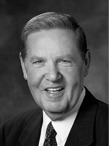

The words which Alma, the High Priest according to the holy order of God, delivered to the people in their cities and villages throughout the land.
Beginning with chapter 5.
The superscription to Alma 5 was part of the ancient record translated by the Prophet Joseph Smith and dictated by him to his scribe (see also, for example, 2 Nephi, Mosiah 9, and Alma 21).
What is the setting of Alma’s discourse in Zarahemla? (5:1) “[Alma 5 is] a long and carefully articulated address delivered presumably over a period of time and on various occasions . . . ‘in the city of Zarahemla,’ possibly consisting of seven or more congregations (Mosiah 25:23)” (Brown, “Alma’s Conversion,” 143).
From whom did Alma the Elder receive the priesthood? (5:3) President Joseph Fielding Smith reminded us that “in the Book of Mosiah it is stated definitely that [Alma the Elder] had authority [see Mosiah 18:13].” However, the Book of Mormon does not indicate from whom Alma received his priesthood. President Smith explained, “Remember that the Book of Mormon is an abridgment of former records, and like the Bible, does not furnish many details. If I remember correctly, there is no reference to the baptism of Alma the elder or Helaman nor of Nephi and his brother Jacob, but we know they were baptized as were all the faithful members in the Church” (Smith, Answers to Gospel Questions, 3:203–4).
Why does Alma narrate the history of the deliverance of the Nephites? (5:4–5) “Alma intends to draw parallels between this people and his father’s church by the Waters of Mormon. First, those Nephites were in bondage to the Lamanites. . . . Second, Yahweh’s power delivered Alma’s father’s people from Lamanite bondage. Alma wanted to emphasize the power of faith and [God’s] power to deliver, logically suggesting that [God’s] power will also resolve their current situation. Third, Alma’s father’s converts came to Zarahemla and established ‘the church of God,’ of which his listeners are members. This statement forcefully brings history into the present. Symbolically, the current church will have the same option as that earlier church, and it, too, may be delivered by [God’s] word” (Gardner, Second Witness, 4:91).
What did Alma want his people to remember? (5:6) “Many of the things he recited to his brethren were familiar to them. Some . . . of his listeners had undergone . . . the tribulations of which he spoke. . . . Out of all their trials and afflictions, which were many, they all knew whereof Alma spoke. . . .
“All these things out of which the Lord had rescued them and of which Alma reminded them, led to the questions which were uppermost in his mind. . . . Has the remembrance of these things stirred you up to a renewed determination to serve God, even that you keep all His commandments?” (Reynolds and Sjodahl, Commentary on the Book of Mormon, 3:75).
Brett P. Thomas observed in connection with the theme of remembering in Alma’s discourse: “An angel commanded Alma: ‘Go, and remember the captivity of thy fathers . . . and remember how great things [the Lord] has done for them; for they were in bondage, and he has delivered them’ (Mosiah 27:16). A converted Alma never forgot that command and consistently shared this message throughout his ministry (Alma 29:11–12; 36:29). Of the Saints in Zarahemla he asked: ‘Have you sufficiently retained in remembrance the captivity of your fathers? . . . Have you sufficiently retained in remembrance [God’s] mercy and longsuffering towards them? . . . Behold, he changed their hearts; yea, he awakened them out of a deep sleep, and they awoke unto God. Behold, they were in the midst of darkness; nevertheless, their souls were illuminated by the light of the everlasting word. . . . And they did sing redeeming love’ (5:6–9)” (“They Did Remember His Words,” 98).
How are we to awaken others unto God? (5:7) “We need to use the everlasting word to awaken those in deep sleep so they will awake ‘unto God.’
“I am deeply concerned about what we are doing to teach the Saints at all levels the gospel of Jesus Christ as completely and authoritatively as do the Book of Mormon and the Doctrine and Covenants. By this I mean teaching the ‘great plan of the Eternal God,’ to use the words of Amulek (Alma 34:9).
“Are we using the messages and the method of teaching found in the Book of Mormon and other scriptures of the Restoration to teach this great plan of the Eternal God?” (Benson, “The Book of Mormon and the Doctrine and Covenants,” 84).
What are the “chains of hell”? (5:7–10) Alma later defines the “chains of hell” as being brought “into subjection unto [the devil], . . . that he might chain you down to everlasting destruction” (Alma 12:6) and as “knowing nothing concerning [God’s] mysteries,” they are, as a consequence, being “taken captive by the devil, and led by his will down to destruction” (Alma 12:11).
What is a “mighty change” of heart? (5:10–13) “Webster says . . . that conversion is ‘a spiritual and moral change attending a change of belief with conviction’ [italics added]. As used in the scriptures, converted generally implies not merely mental acceptance of Jesus and his teachings, but also a motivating faith in him and in his gospel, a faith which works a transformation, an actual change in one’s understanding of life’s meaning and in one’s allegiance to God—in interest, in thought, and in conduct. While conversion may be accomplished in stages, one is not really converted in the full sense of the term unless and until he is at heart a new person” (Romney, “According to the Covenants,” 71).
President Ezra Taft Benson defined in more detail the characteristics of those who have experienced a mighty change of heart: “When you choose to follow Christ, you choose to be changed. . . . The Lord works from the inside out. The world works from the outside in. The world would take people out of the slums. Christ takes the slums out of people, and then they take themselves out of the slums. The world would mold men by changing their environment. Christ changes men, who then change their environment. The world would shape human behavior, but Christ can change human nature. . . .
“Yes, Christ changes men, and changed men can change the world.
“Men changed for Christ will be captained by Christ. Like Paul they will be asking, ‘Lord, what wilt thou have me to do?’ (Acts 9:6). Peter stated, they will ‘follow his steps’ (1 Pet. 2:21). John said they will ‘walk, even as he walked’ (1 Jn. 2:6).
“Finally, men captained by Christ will be consumed in Christ. To paraphrase President Harold B. Lee, they set fire in others because they are on fire (Stand Ye in Holy Places, 192).
“Their will is swallowed up in His will (see John 5:30).
“They do always those things that please the Lord (see John 8:29).
“Not only would they die for the Lord, but more important they want to live for Him.
“Enter their homes, and the pictures on their walls, the books on their shelves, the music in the air, their words and acts reveal them as Christians.
“They stand as witnesses of God at all times, and in all things, and in all places (see Mosiah 18:9).
“They have Christ on their minds, as they look unto Him in every thought (see D&C 6:36).
“They have Christ in their hearts as their affections are placed on Him forever (see Alma 37:36).
“Almost every week they partake of the sacrament and witness anew to their Eternal Father that they are willing to take upon them the name of His Son, always remember Him, and keep His commandments (see Moro. 4:3)” (“Born of God,” 5–7).
What does it mean to have God’s image in our countenance and to have a change of heart? (5:14, 19) “To receive Christ’s image in one’s countenance means to acquire the Savior’s likeness in behavior, to be a copy or reflection of the Master’s life. This is not possible without a mighty change in one’s pattern of living. It requires, too, a change in feelings, attitudes, desires, and spiritual commitment” (Skinner, “Alma’s ‘Pure Testimony,’” 301).
“The heart is used by Alma to symbolize the center of affections. By using a question/answer approach, Alma invites his listeners to personally evaluate their conversion to the gospel of Jesus Christ” (Black, 400 Questions and Answers, 149).
“An ‘image’ is not just an outward visual impression but also a vivid representation, a graphic display, or a total likeness of something. It is a person or thing very much like another, a copy or counterpart. Likewise, countenance does not simply mean a facial expression or visual appearance. The word comes from an old French term originally denoting ‘behavior,’ ‘demeanor,’ or ‘conduct.’ In earlier times the word countenance was used with these meanings in mind. . . .
“This involves the heart. Reynolds and Sjodahl have said: ‘The heart is said to be the seat of spiritual light; the source whence springs our love and our devotion, our likes and dislikes, our joys and our sorrows, and our loyalty and fidelity.’
“According to Alma, the mighty change of heart must be ‘experienced.’ Perhaps that is why the concept of spiritual rebirth, ‘being born again,’ is considered by some to be difficult to talk about. In fact, it was never intended to be merely ‘understood’ intellectually or in a passive sense. It must be personally experienced. Alma wanted his audience to be active participants. Those who experienced it, said Alma, have ‘felt to sing the song of redeeming love’ (Alma 5:9, 26). Other scripture confirms that it was so in ancient times as well (Ps. 147:1–7). Alma hoped that his people would retain this blessed and favored state (Alma 5:26); for only by remaining ‘steadfast and immovable, always abounding in good works’ can celestial glory be guaranteed (Mosiah 5:15; italics added)” (Skinner, “Alma’s ‘Pure Testimony,’” 301–2).
How do we “exercise faith in the redemption” of Christ? (5:15) “To exercise faith in the redemption of Christ is to have perfect confidence that in Christ is found the power to remit sins, heal souls, raise the dead, and triumph in all that is right and good. It is to trust the simplicity of gospel answers; it is to seek the sanction of heaven on all that one does” (McConkie and Millet, Doctrinal Commentary, 3:30).
What does it mean to be judged of mortal deeds? (5:15) “God is sincere in trying to promote their [those outside of the Church] happiness and welfare as well as he is ours, both in regard to this world and the world to come. And hence he will do the best he possibly can with all peoples. But . . . being governed by law, he can only treat them ‘according to the deeds done in the body, whether those deeds be good or evil’ [JST, 2 Corinthians 5:10]. And when that judgment takes place all men will have to abide its award; there is no appeal from it. No court to which they can have access whereby they can change the decree of the Almighty” (John Taylor, in Journal of Discourses, 20:111).
What are the implications of Alma’s questions in these verses? (5:16–19) “Alma implies here that the ‘exercise of faith in the redemption’ [verse 15] of Christ sufficient to bring about the mighty change in one’s heart is prerequisite to obtaining a pure heart and clean hands. He also implies that if on the great judgment day one can look up to God with a pure heart and clean hands, he will hear the voice of the Lord saying unto him, ‘Come unto me ye blessed’; if he cannot do so, his soul will be filled with guilt and remorse” (Romney, Learning for the Eternities, 127).
President Marion G. Romney explained the implications of these verses: “He uses the phrase ‘a pure heart and clean hands’ to indicate a state of purity; the condition one attains unto when, through faith in the Lord Jesus Christ, repentance, baptism by immersion, and baptism by fire and the Holy Ghost, he receives forgiveness of sins, which works in him a spiritual rebirth; a birth through which he comes back into harmony with, and is sensitive and alive to, the things of the spirit. ‘Healed’ is the term frequently used in the scriptures to denote the state of such a one.
“On that great day, according to Alma, those who have pure hearts and clean hands will receive ‘an inheritance at the right hand’ of God, while those who do not will wail and mourn, for at long last they will recognize that they cannot be saved, but must await ‘an everlasting destruction’” (Learning for the Eternities, 127–28).
Will we remember all of our deeds and thoughts after this mortal life? (5:18) “As all will be resurrected, your physical body will then be restored to its proper and perfect frame (see Alma 11:43; Alma 40:23). The day of your resurrection will be a day of judgment that will determine the kind of life you shall have hereafter.
“That judgment will consider not only your actions, but also your innermost intent and heartfelt desires. Your everyday thoughts have not been lost. Scriptures speak of the ‘bright recollection’ (Alma 11:43) and ‘perfect remembrance’ (Alma 5:18) that your mind will provide in times of divine judgment” (Nelson, “Choices,” 75).
What does it mean to have our garments “washed white”? (5:21–22) “No principle was better understood among the ancient Saints than that no unclean thing could enter the presence of the Lord. Thus the imagery common to the scriptures is to depict the Saints of God, those living righteous lives, as wearing ‘robes of righteousness’ (2 Nephi 9:14; Revelation 19:8), or ‘garments of salvation’ (Isaiah 61:10). This imagery is closely associated with the temple, which is the earthly representation of the divine presence, or our sought-after heavenly abode. In the temple we are taught, primarily with symbolic representation, how we return to the presence of God (see D&C 109:80)” (McConkie and Millet, Doctrinal Commentary, 3:31; see also commentary in this volume on Alma 7:25).
What is the “song of redeeming love”? (5:26) “To sing the song of redeeming love is to joy in the matchless majesty of God’s goodness, to know the wonder of his love. It is to sense and know that the Lord is intimately involved with his children and that he cares, really cares, about their well-being. . . .
“ . . . All those who have had the burdens of sin, the weight of guilt, and the agonies of bitterness, hostility, or pain removed by the Great Physician shout praises to the Holy One of Israel” (Millet, Power of the Word, 232–33).
How will we know if we are prepared for the kingdom of heaven? (5:26–31) “You will have put yourself so often in the Master’s service, bringing the cleansing companionship of the Holy Ghost, that you will be on the front row, early, whenever and wherever the Master calls” (Eyring, To Draw Closer to God, 58).
Do you feel the cleansing power of the Holy Ghost when you offer service to the Savior?
President Russell M. Nelson addressed the question of preparing for the kingdom of heaven: “Now is the time. But how do we prepare? Begin with repentance! Scripture declares, ‘If ye have sought to do wickedly in the days of your probation, then ye are found unclean before the judgment-seat of God; . . . no unclean thing can dwell with God’ (1 Nephi 10:21). He gave this simple rule: ‘Except ye abide my law ye cannot attain to this glory’ (D&C 132:21).
“Now is the time to show reverent respect for one’s physical body. It serves as the tabernacle for one’s spirit throughout all eternity. Physical appetites are to be controlled by the will of one’s spirit. We are to ‘deny [our]selves of all ungodliness’ (Moroni 10:32). We are to ‘forsake all evil and cleave unto all good, [and] live by every word which proceedeth forth out of the mouth of God’ (D&C 98:11).
“Because of frequent and frightening calamities in the world, some people doubt the existence of God. But, in fact, He is trying to help us. He revealed these words: ‘How oft have I called upon you by the mouth of my servants, and by the ministering of angels, and by mine own voice, and by the voice of thunderings, and . . . tempests, . . . earthquakes, . . . great hailstorms, . . . famines and pestilences of every kind, . . . and would have saved you with an everlasting salvation, but ye would not!’ (D&C 43:25).
“His hope for us is eternal life. We qualify for it by obedience to covenants and ordinances of the temple—for ourselves, our families, and our ancestors. We cannot be made perfect without them. We cannot wish our way into the presence of God. We are to obey the laws upon which those blessings are predicated.
“God’s plan is fair. Even those ‘who have died without a knowledge of this gospel, who would have received it if they had been permitted to tarry, shall be heirs of the celestial kingdom of God’ (D&C 137:7). His plan is also merciful. He ‘will judge all men according to their works, according to the desire of their hearts’ (D&C 137:9).
“Now is the time to enroll our names among the people of God. This we do by paying tithing. He tithes His people to bless them. Sister Nelson taught that lesson to our family, over and over again.
“Now is the time to align our goals with God’s goals. His work and His glory—‘to bring to pass the immortality and eternal life of man’ (Moses 1:39)—can become ours. Of temple marriage the Savior declared, ‘If a man marry a wife by my word, which is my law, and by the new and everlasting covenant, . . . [they] shall inherit thrones, kingdoms, principalities, and powers, dominions, . . . exaltation and glory in all things’ (D&C 132:19). We are to emulate the example of the Lord, to love as He did, to pray as He did, and to endure to the end as He did” (“Now Is the Time to Prepare,” 17–18).
What does the phrase “the kingdom of heaven is soon at hand” mean? (5:28) “In one sense this [phrase] meant to the Nephites that Christ, the King of all the earth, would come into mortality (see v. 50; Alma 7:9; 10:20). In another sense it means that each of us, as we face the time of death, must reckon with ourselves in regard to the commandments of God. That is, we know not the day nor the hour in which our experience in mortality will end. Be it a few years or many (as mortals count them), the time spent on earth will seem all too short” (McConkie and Millet, Doctrinal Commentary, 3:33).
What is envy and where might it lead? (5:29) “It has been said that envy is the one sin to which no one readily confesses, but just how widespread that tendency can be is suggested in the old Danish proverb, ‘If envy were a fever, all the world would be ill.’ The parson in Chaucer’s Canterbury Tales laments it because it is so far-reaching—it can resent anything, including any virtue and talent, and it can be offended by everything, including every goodness and joy. As others seem to grow larger in our sight, we think we must therefore be smaller. So, unfortunately, we occasionally act that way” (Holland, “The Other Prodigal,” 63).
It is important to note that in the aftermath of Christ’s visit among the Nephites, there were no “envyings” among the people (4 Nephi 1:16). Throughout the rest of the Book of Mormon, however, envy was a persistent problem (see Alma 1:32; 16:18; Helaman 13:22). One of the most important warnings from Book of Mormon prophets is that in the last days, envy will become a great stumbling-block to righteousness and the progress of the Church (see Mormon 8:28; see also 2 Nephi 21:13; 26:21, 32).
Stripping Ourselves of Envy
© Intellectual Reserve, Inc.
Used by permission.
Elder Jeffrey R. Holland of the Quorum of the Twelve Apostles
Elder Jeffrey R. Holland noted how the world conditions us to embrace the sin of envy: “How does this happen, especially when we wish so much that it would not? I think one of the reasons is that every day we see allurements of one kind or another that tell us what we have is not enough. Someone or something is forever telling us we need to be more handsome or more wealthy, more applauded or more admired than we see ourselves as being. We are told we haven’t collected enough possessions or gone to enough fun places. We are bombarded with the message that on the world’s scale of things we have been weighed in the balance and found wanting. Some days it is as if we have been locked in a cubicle of a great and spacious building where the only thing on the TV is a never-ending soap opera entitled Vain Imaginations. . . .
“How can we overcome such a tendency so common in almost everyone? For one thing, we can . . . start making our way back to the Father. We should do so with as much haste and humility as we can summon. Along the way we can count our many blessings and we can applaud the accomplishments of others. Best of all, we can serve others, the finest exercise for the heart ever prescribed. But finally these will not be enough. When we are lost, we can ‘come to ourselves,’ but we may not always be able to ‘find ourselves,’ and, worlds without end, we cannot ‘save ourselves.’ Only the Father and His Only Begotten Son can do that. Salvation is in Them only. So we pray that They will help us, that They will ‘come out’ to meet and embrace us and bring us into the feast They have prepared.
“They will do this! The scriptures are replete with the promise that God’s grace is sufficient. This is one arena where no one has to claw or compete. Nephi declares that the Lord ‘loveth the [whole] world’ and has given salvation freely. . . .
“I testify that no one of us is less treasured or cherished of God than another. I testify that He loves each of us—insecurities, anxieties, self-image, and all. He doesn’t measure our talents or our looks; He doesn’t measure our professions or our possessions. He cheers on every runner, calling out that the race is against sin, not against each other. I know that if we will be faithful, there is a perfectly tailored robe of righteousness ready and waiting for everyone, ‘robes . . . made . . . white in the blood of the Lamb’ (Revelation 7:14)” (“The Other Prodigal,” 63–64).
Who is invited to come unto the Lord? (5:33–34) Elder Quentin L. Cook said: “We are all equal before God. His doctrine is clear. In the Book of Mormon, we read, ‘All are alike unto God,’ including ‘black and white, bond and free, male and female’ (2 Nephi 26:33). Accordingly, all are invited to come to the Lord” (Cook, “The Eternal Everyday,” 51). President Russell M. Nelson also stated: “Our message to the world is simple and sincere: We invite all of God’s children on both sides of the veil to come unto their Savior, receive the blessings of the holy temple, have enduring joy, and qualify for eternal life” (Nelson, “Let Us All Press On, 118–119).
Who are those not included in the fold of “the good shepherd”? (5:38–39) Joseph Fielding Smith stated that those not of the fold are “all who refuse to receive the fulness of the truth, or abide by the principles and ordinances of the everlasting gospel. They may have received a testimony; they may be able to testify that they know that Jesus is the Christ; but in their lives they have refused to accept ordinances which are essential to entrance into the celestial kingdom. They have refused to live the gospel, when they knew it to be true; or have been blinded by tradition; or for other cause have not been willing to walk in the light” (Smith, Doctrines of Salvation, 2:28–29).
President Joseph Fielding Smith noted the characteristics of those unwilling to fully embrace the gospel of Jesus Christ: “In this class we could properly place those who refuse to take upon them the name of Christ, even though they belong to the Church; and those who are not willing when called to go forth and preach to a perverse world ‘Jesus Christ, and him crucified.’
“They may live clean lives; they may be honest, industrious, good citizens, and all that; but they are not willing to assume any portion of the labor which devolves upon members of the Church, in carrying on the great work of redemption of mankind.
“We have known members of the Church who have gone out in the world and have mingled with those not of our faith, and these members were ashamed to have it known that they were Latter-day Saints. Such persons certainly are not valiant in the testimony of Jesus. The Lord has said: ‘Whosoever therefore shall be ashamed of me and of my words in this adulterous and sinful generation; of him also shall the Son of man be ashamed, when he cometh in the glory of his Father with the holy angels’ [Mark 8:3]” (Doctrines of Salvation, 2:29).
How are verses 40–41 consistent with other teachings of the Savior’s servants? (5:40–41) “All that is good comes from God, and all that is evil comes from the devil (Alma 5:40) is also a New Testament doctrine. The Apostle James taught: ‘Every good gift and every perfect gift is from above, and comes down from the Father of lights, with whom there is no variableness, neither shadow of turning’ (James 1:17). The concepts that good works come from following the good shepherd and evil works come from following the devil (Alma 5:41), and that we receive wages from whom we follow, were taught in the previous chapter of Alma (see Alma 4:26–27)” (Nyman, Record of Alma, 66).
Where does serving Satan lead? (5:42) “Those who do not live the gospel are servants of sin; when they accept the gospel and yield themselves to the cause of righteousness, their sins are forgiven through baptism, and they become the servants of righteousness.
“The fruit of sin is spiritual death.
“The fruit of righteousness is everlasting life.
“‘Every man receiveth wages of him whom he listeth to obey’ (Alma 3:27). Satan pays his servants with death, spiritual death, death as pertaining to the things of righteousness; Christ rewards those who serve him with life, spiritual life, eternal life, life in the presence of God, enjoying and possessing all that Deity himself has” (McConkie, Doctrinal New Testament Commentary, 2:251).
How do we teach according to God’s holy order? (5:44) See commentary in this volume on 2 Nephi 6:2. High priests are to teach the commandments unto the children of men and preach repentance (Alma 13:6, 18). Elders, priests, and teachers are exhorted to teach the principles of the gospel from the Bible and Book of Mormon (see D&C 42:12). Alma counseled his son Shiblon to teach in “boldness, but not overbearance” (Alma 38:12). Those teaching after the holy order of God should live in such a way that the Lord can put words into their hearts and minds (Helaman 13:4–5). When directed by the Lord they are to warn against “every kind of sin, telling them the awful consequences of them” (Jacob 3:12). Those ordained are to teach with all diligence (Jacob 1:19).
Why did Alma testify, in the way he did, that his words were true? (5:45–46) “The crowning, convincing, converting power of gospel teaching is manifest when an inspired teacher says, ‘I know by the power of the Holy Ghost, by the revelations of the Holy Spirit to my soul, that the doctrines I have taught are true.’ This divine seal of approval makes the spoken word binding upon the hearers” (McConkie, Promised Messiah, 516–17).
“Alma preached a powerful sermon about the spiritual rebirth that should come into the life of every true saint. He quoted the sayings of the fathers and expounded his doctrinal views with clarity and certainty. Then he said: ‘And this is not all. Do ye not suppose that I know of these things myself? Behold, I testify unto you that I do know that these things whereof I have spoken are true.’ It should be noted that Alma is not bearing testimony that the work in which he is engaged is true; he is certifying that the doctrinal principles he is expounding are themselves the mind and will of the Lord. ‘And how do ye suppose that I know of their surety?’ he asks. ‘Behold, I say unto you they are made known unto me by the Holy Spirit of God,’ he replies. ‘Behold, I have fasted and prayed many days that I might know these things of myself,’ he continues. ‘And now I do know of myself that they are true; for the Lord God hath made them manifest unto me by his Holy Spirit: and this is the spirit of revelation which is in me’ (Alma 5:45–46). It should be added that when the Lord’s servants preach in power, by the promptings of the Holy Spirit, the Lord adds his own witness to the truth of their words. That witness comes in the form of signs and gifts and miracles. Such are always found when the preached word, given in power, is believed by hearers with open hearts. And we shall now take particular note of how the Lord Jesus interwove his spoken words and his healing powers to leave a witness of his own divine calling that could not have been given in any other way. We shall see, by way of sample only, how and in what manner he taught gospel truths” (McConkie, Promised Messiah, 517).
Why did those in ancient times fast? (5:46) “Anciently, obtaining a testimony was one reason for fasting. The Old Testament and the Book of Mormon tell of people fasting for a variety of reasons: comfort at the death of a loved one (see 2 Sam. 1:12; Alma 30:2); help for the sick (see Matt. 17:18–21); overcoming sin (see Isa. 58:6); and help in missionary work (see Alma 17:9)” (Black, 400 Questions and Answers, 150–51).
What is the “spirit of revelation”? (5:46–47) “Christ has himself declared that the manifestations we might have of the Spirit of Christ, or from a visitation of an angel, a tangible resurrected being, would not leave the impression and would not convince us and place within us that something which we cannot get away from which we receive through a manifestation of the Holy Ghost. Personal visitations might become dim as time goes on, but this guidance of the Holy Ghost is renewed and continued, day after day, year after year, if we live to be worthy of it” (Smith, Doctrines of Salvation, 1:44).
How close at hand is the “kingdom of heaven”? (5:50) “The ultimate fulfillment of these prophetic words is the establishment of the millennial kingdom, that time when Christ will come in glory, might, majesty, power, and dominion to rule and reign as Lord of lords and King of kings. In a limited sense, however, the kingdom of God would come when Jesus would come to earth in fourscore years’ time. In another sense the coming of the heavenly kingdom is equally close for men of all ages. This is so because those who live well, those who choose to repent and honor their God and his Christ—irrespective of when they lived or how long they lived—will obtain citizenship in the heavenly kingdom hereafter” (McConkie and Millet, Doctrinal Commentary, 43).
Why is a tree often used as a metaphor in scripture? (5:52) “The axe of a husbandman is used in a symbolic sense by several inspired writers to denote the manner in which barren trees (men) will be destroyed (Luke 3:9; D&C 97:7; Isa. 10:33–34). . . . As a tree often represents a man, so a branch signifies one aspect of a man (Mal. 4:1; Job 29:19; Prov. 11:28; see also John 15:1–6). Therefore, figuratively, a man has roots, leaves, and branches. Concerning the final status of the wicked, it is said that ‘his roots shall be dried up beneath, and above shall his branch be cut off’ (Job 18:16)” (McConkie and Parry, A Guide to Scriptural Symbols, 18, 25).
What is the meaning of things being “vain”? (5:53–54) Vain is defined as “empty; worthless; having no substance, value or importance. . . . Elated with a high opinion of one’s own accomplishments” (Webster, American Dictionary).
How can the world’s uncleanness lead Church members away from their covenants? (5:57, 59–60) “Drifting away from the course of life marked out by the Lord has occurred as individuals begin to make compromises with the Lord’s standard. This is particularly true when the transgression is willful and no repentance occurs. . . . It [begins] as individual members of the Church knowingly [begin] to make compromises with the Lord’s standard. They [seek] justification for their diversions in the knowledge that others [are] compromising as well. Those who willfully sin soon seek to establish a standard of their own with which they can feel more comfortable and which justifies their misconduct. They also seek the association of those who are willing to drift with them along this path of self-delusion” (Larsen, “Likening the Scriptures unto Us,” 8).
Elder Dean L. Larsen continued: “As the number of drifting individuals increases, their influence becomes more powerful. It might be described as the ‘great and spacious building syndrome.’ The drifting is the more dangerous when its adherents continue to overtly identify with and participate with the group that conforms to the Lord’s way. Values and standards that were once clear become clouded and uncertain. The norm of behavior begins to reflect this beclouding of true principles. Conduct that would once have caused revulsion and alarm now becomes somewhat commonplace” (“Likening the Scriptures unto Us,” 8).
What is the purpose of Church discipline? (5:57) “When members need to have certain blessings withheld, the Lord’s object is to teach as well as to discipline. So probation, disfellowshipment, and excommunication, when they become necessary, are ideally accompanied by eventual reinstatement and restoration of blessings. . . . The purpose is threefold: to save the soul of the transgressor, to protect the innocent, and to safeguard the Church’s purity, integrity, and good name” (Ballard, “Chance to Start Over,” 12).
President M. Russell Ballard outlined the circumstances when Church discipline is appropriate and when it is not: “Members sometimes ask why Church disciplinary councils are held. The purpose is threefold: to save the soul of the transgressor, to protect the innocent, and to safeguard the Church’s purity, integrity, and good name.
“The First Presidency has instructed that disciplinary councils must be held in cases of murder, incest, or apostasy. A disciplinary council must also be held when a prominent Church leader commits a serious transgression, when the transgressor is a predator who may be a threat to other persons, when the person shows a pattern of repeated serious transgressions, when a serious transgression is widely known, and when the transgressor is guilty of serious deceptive practices and false representations or other terms of fraud or dishonesty in business transactions.
“Disciplinary councils may also be convened to consider a member’s standing in the Church following serious transgression such as abortion, transsexual operation, attempted murder, rape, forcible sexual abuse, intentionally inflicting serious physical injuries on others, adultery, fornication, homosexual relations, child abuse (sexual or physical), spouse abuse, deliberate abandonment of family responsibilities, robbery, burglary, embezzlement, theft, sale of illegal drugs, fraud, perjury, or false swearing.
“Disciplinary councils are not called to try civil or criminal cases. The decision of a civil court may help determine whether a Church disciplinary council should be convened. However, a civil court’s decision does not dictate the decision of a disciplinary council.
“Disciplinary councils are not held for such things as failure to pay tithing, to obey the Word of Wisdom, to attend church, or to receive home teachers. They are not held because of business failure or nonpayment of debts. They are not designed to settle disputes among members. Nor are they held for members who demand that their names be removed from Church records or who have joined another church; that is now an administrative action” (“Chance to Start Over,” 15).
